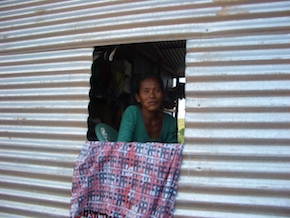

- Title Page
- Introduction
- The Islands and the Anthropologist
- Tsunami and First Response
- Wading In
- Second Tsunami
- In Search of Axes
- Steering a Sustainable Course
- Steering Committee
- Exchange Visit
- Nirnay Means Decision
- Up and Running
- Caritas Leans In
- Singh Sounds a Warning
- Midcourse Correction
- The SOPHIA Experiment
- Taking Stock
- SOPHIA Reports
Second Tsunami
When Singh arrived in the Nicobars in late January 2005, a month after the tsunami, he found the Nicobarese traumatized. Many were mute. Some sat on the beach for hours, staring out into the ocean. All were disorientated, “at the mercy of little things”:[12] mosquitoes, stubbed toes, filthy clothes, unaccustomed foods, the high-handedness of Indian officials who had come to help.
Outside that circle of grief and forbearance, the reconstruction effort was already underway. More than 60 NGOs were now camped in Port Blair clamoring for access to the islands, lobbying the government for contracts to supply food, clothing, pigs, boats, seeds, construction materials, teacher training – anything, it seemed, if pen could just be put to paper. The competition for contracts was fierce both because the NGOs had so much money to spend and because many of them had 90-day spending deadlines.

© Simron Singh
Aid-provided housing
As a result, the Nicobars were awash in aid. Food rations were guaranteed for the next 18 months, and millions of rupees had been promised in cash compensation payments.[13] Roads were being staked out, housing units designed, electric lines laid. Temporary housing had begun to replace the blue tarps in the camps; made of corrugated tin, the shelters were hot and airless—Giles called them “boiling chambers”—but they would keep out the rains in the coming monsoons. Meanwhile, 70,000 metric tons of building materials were on order from abroad to build 7,000 units of permanent housing.[14]
Other projects seemed less well considered. Five huge, 1 million-liter water tanks arrived from Australia, but there was no water delivery system to fill them. Ten thousand families each received 1,000 meters of nylon rope—but for what?[15] An NGO sent saris, but women in the Nicobars didn’t wear saris, they wore sarongs (the women sewed the saris into mosquito nets, which were needed but so far not provided). Boats were to be distributed, but only to applicants who held government fishing licenses, and few Nicobarese did. Shipments of communications equipment arrived by the boatload—televisions, radios, CDs, and cell phones – and soon had the islanders’ children in thrall. The Nicobarese were receiving aid, but it wasn’t always the aid they needed. As Rasheed told a documentary film crew:
I find outside people never understand our way of thinking and living. They always want to show progress, without looking into the actual needs of the people. Nobody understands that, which hurt me always.[16]
Sustainability and self-determination. Singh was shocked by the deluge of humanitarian aid he saw in Port Blair and in the Nicobars. He called it the “second tsunami” and judged it in some ways more harmful than the first.[17] Not only was much of the aid culturally inappropriate, it was also unsustainable. For example, a well-regarded “organic plantation” plan to rebuild the traditional coconut economy would require more than 20 pounds of imported fertilizer per plant per year, an unthinkable expense for a subsistence economy.[18]
Similarly, government plans for permanent housing called for electric lights, gas stoves, and in-home plumbing. Where would the energy and water come from? How would the Nicobarese pay those bills down the line? Their compensation payments would run out eventually; what source of cash income could they depend on? As a scientist, Singh could see that the coming demands on the social ecology of the islands were unsupportable. The energy load, water demand, caloric intake, and cash requirements all exceeded traditional capacities and would require drastic changes in the Nicobarese way of life.
Self-determination was another issue. Outsiders observed that the Nicobarese had long been treated as second-class citizens. Called holchu, or “tribals,” they were seen by local Indians and immigrant workers as lazy, backward, uncivilized people.[19] Though the government officially “protected” the tribes, critics charged that it patronized them, seldom engaging them in decisions that affected their wellbeing or future. The tsunami only made matters worse. In the resulting state of emergency, under time pressure and international scrutiny, and with little direct access to the Nicobarese communities, the government and humanitarian aid providers essentially decided the Nicobarese projects among themselves. Though the Tribal Council and NYA met almost daily in the first six months of 2005, most of the reconstruction planning and implementation fell to others. Some Nicobarese were starting to feel like pawns in a game that seemed to benefit donors more than victims, and they didn’t like it.
[12] Barth, Aftermath.
[13] So full were government coffers that the original offer of 4,000 rupees (about $90) per hectare of lost crop land was later negotiated upward to 94,000 rupees (about $2,135) per hectare. Simron Jit Sing, “Field Report/Evaluation of the Situation in the Nicobars, March-May 2006,” in SIF files.
[14] The amount of imported building materials would almost triple to 200,000 metric tons before the units were finally built in 2006 and 2007. Ibid; Simron Jit Singh, “General Situation in the Nicobar Islands, March-April 2007,” PowerPoint presentation, in SIF files.
[15] Parwini Zora and Daniel Woreck, “Tsunami survivors left to suffer on Andaman and Nicobar islands,” World Socialist Website, January 4, 2006.See: http://www.wsws.org/en/articles/2006/01/anda-j04.html
[16] Barth, Aftermath.
[17] Ibid.
[18] Simron Jit Singh, “Field Report/Evaluation of the Situation in the Nicobars, March-May 2006,” in SIF files.
[19] Venkat Ramanujam Ramani, “Gifts Without Dignity?” p. 27; also author’s interview with Celeste Angus, director of international cooperation for World ORT, February 19, 2014.